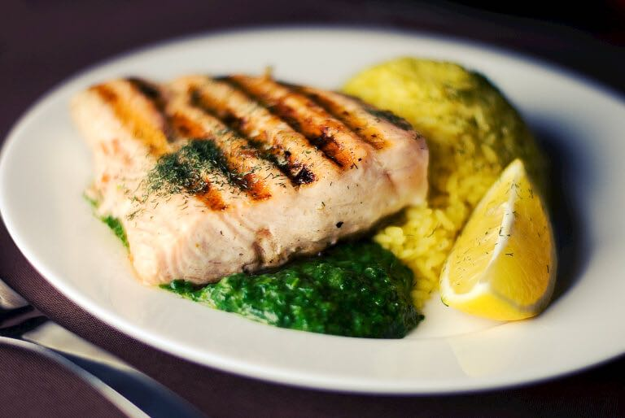

Grilled steak and rice
======================
### Ingredients
#### For the ratatouille
* courgette
* 1 small aubergine
* 2 mixed-color peppers
* 1 red onion
* 1 heaped teaspoon harissa
* 2 anchovy fillets
* 2-4 cloves of garlic
* 700 g passata
* 1 tablespoon balsamic vinegar
* ½ bunch fresh basil
* 2 tablespoons fat-free natural yoghurt
#### For the rice
* 1 mug (300g) 10-minute wholegrain or basmati rice
* 1 good pinch saffron
* ½ lemon
#### For the steak
* 2 x 250 g quality sirloin steaks, fat removed
* 1 teaspoon sweet paprika olive oil
* ½ bunch fresh flat-leaf parsley
* 1 heaped teaspoon Dijon mustard
* 1 tablespoon extra virgin olive oil
* ½ lemon
### Instructions
1. Halve the courgette lengthways, slice the aubergine 1cm thick and place both on the griddle pan, turning when charred.
2. Put 1 mug of rice, 2 mugs of boiling water, the saffron, lemon half and a pinch of salt into the small pan, cover and cook until fluffy, stirring occasionally.
3. Tear the seeds and stalks out of the peppers, then roughly chop with the peeled red onion and put into the casserole pan with the harissa, anchovies and 1 teaspoon of their oil.
4. Squash in the unpeeled garlic through a garlic crusher and stir regularly.
5. Remove the charred courgette and aubergine from the griddle pan, leaving it on the heat, and roughly chop them on a board.
6. Add them to the casserole pan along with the passata and vinegar, and boil with the lid on.
7. Rub the steaks with salt, the paprika and 1 teaspoon of olive oil and place on the hot griddle pan, turning every minute until cooked to your liking.
8. On a board, finely slice the parsley stalks and roughly chop the leaves.
9. Add the mustard and extra virgin olive oil, season with salt and pepper and squeeze over the lemon juice, then mix together and spread over the board.
10. When the steaks are done, transfer them to the board, turn in the dressing, then slice.
11. Tear the top leafy half of the basil into the ratatouille, season to taste, and serve with yoghurt and saffron rice.
**Enjoy!**